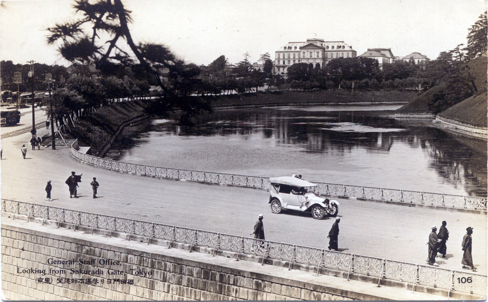

第 8 章
仰光的陷落
亚历山大将军抵达仰光的那天下午，码头区正冒着黑烟。不是日军轰炸造成的——空袭在上午就结束了——而是殖民地政府的官员们在焚烧文件。成捆的档案、账册、税务记录被从政府大楼里搬出来，浇上

日本陆军省参谋部旧址
图源：维基共享资源 · Unknown author Unknown author · Public domain
汽油，在草坪上点燃。纸灰被旱季的热风卷起来，飘过伊洛瓦底江的支流，落在港口堆积如山的军用物资上。
那些物资还来不及拆箱。步枪弹药、医疗用品、罐装牛肉、轮胎、航空汽油——全都堆在露天，盖着已经褪色的防水帆布。起重机闲置在泊位旁，码头工人跑了大半，剩下的人在等待永远不可能到来的疏散船。亚历山大从飞机舷窗望下去时，看见的是一座正在自我销毁的城市。
这一天是1942年3月5日。距离日军第五十五师团从泰国麦索越过边境，已经过去了四十四天。
四十四天前，仰光还沉浸在一种奇异的平静中。殖民地俱乐部里仍在供应冰镇威士忌，赛马场周末照常开放，英国商人们在伊洛瓦底江边的别墅里讨论着马来亚的战况——但那都是别人的战争。
缅甸距离新加坡两千公里，中间隔着马来半岛的丛林和克拉地峡的群山。参谋们在地图上量过：日军如果要进攻缅甸，要么从马来亚北上，要么从泰国西进。两条路线都要穿越被认为“不可通行”的丛林地带。旱季尚且艰难，雨季也是天堑。因此，缅甸的防御有充足的时间准备。
这个判断在1942年1月20日被证伪。日军第五十五师团的先头部队越过泰缅边境时，携带的不是重炮和装甲车辆，而是骡马、折叠舟和轻型山炮。他们的丛林作战手册不是理论推演——是日本陆军在台湾、海南岛和法属印度支那的实战经验总结。手册里写得很清楚：旱季是穿越缅甸丛林的最佳时机。河流水位低，地面坚硬，骡马和轻型车辆可以通行。等到五月雨季来临，道路变成泥沼，那才是真正的后勤噩梦。
手册没有写但每个军官都心知肚明的是另一个前提：速度本身是最有效的武器。日军在马来亚的闪击战已经证明了这一点。山下奉文中将的第二十五军从哥打巴鲁登陆后，放弃了对侧翼的谨慎保护，集中兵力沿公路轴线猛攻。
自行车部队在橡胶园间的土路上穿插渗透，英印军防线被不断绕过、切割、瓦解。新加坡守军八万五千人，面对的是不到四万人的日军，但到1月底，柔佛海峡已经失守。2月15日，珀西瓦尔中将在新加坡福特工厂签署投降书，“东方直布罗陀”沦陷。
新加坡陷落的速度剥夺了缅甸获得增援的最后可能。原本设想中可以用来调集预备队、加固防御工事、完成部队整训的时间窗口，根本不存在。日军第十五军司令官饭田祥二郎中将不需要等待马来亚战役的结果——他已经接到命令，必须在雨季到来之前拿下仰光。
毛淡棉是第一个目标。这座港口城市位于萨尔温江入海口东岸，是仰光东南方向最重要的屏障。驻守这里的是英印军第十七师一部和缅甸步枪队，总兵力约一万人。他们的对手是日军第五十五师团的两个联队，兵力不到六千人。纸面上看，英军占优——火炮数量更多，还有皇家空军的几架老式飓风战斗机提供支援。但指挥官们忽略了一个变量：部队的战斗意志和丛林机动能力。日军没有沿着现有公路推进。
他们分成多个小股纵队，由熟悉地形的泰国向导带路，在英军防线的间隙中穿插渗透。1月25日，日军已经切断了毛淡棉通往仰光的公路。守军意识到自己面临被合围的危险，但撤退命令来得太晚。1月30日夜间，英印军开始向萨尔温江西岸撤退，在渡口遭遇伏击。黑暗中，建制被打乱，大量装备遗弃在东岸。1月31日，毛淡棉失守。
日军缴获了码头上堆积的大米、橡胶和钨矿砂——这些物资原本要运往印度。更致命的是，他们缴获了完整的港口设施和几艘未及撤走的驳船。这些驳船在后来的萨尔温江渡河作战中，成了日军的现成工具。
恐慌从毛淡棉前线传到仰光，再从仰光传到德里和伦敦。英缅军总司令胡敦中将意识到，仰光的东大门已经洞开。他命令英印军第十七师主力在萨尔温江西岸重新组织防线，利用这条宽阔的河流阻止日军继续西进。萨尔温江在旱季的宽度仍有数百米，水流湍急，只有锡当河铁路桥一座固定桥梁可以通行重型装备。第十七师师长约翰·史密斯少将面临的局面比胡敦想象的更糟。
他的部队在毛淡棉撤退中损失了近三分之一的兵力，剩下的士兵疲惫不堪，士气低落。缅甸步枪队的本地士兵开始大量逃亡——他们中的许多人是缅族人，对英国殖民统治心怀不满。日军宣传的“亚洲人的亚洲”口号在他们中间产生了效果。
更致命的是，日军的推进速度远超英军预计。2月初，日军第五十五师团主力抵达萨尔温江东岸。他们没有等待后续重炮和补给完全到位，立即开始渡河准备。工兵部队夜间潜入江中测量水深和流速，侦察部队沿东岸寻找适渡点。他们在锡当河铁路桥上游约二十公里处发现一段江面较窄、水流相对平缓的位置。
2月6日夜间，日军开始强渡萨尔温江。第十七师的防线在几个小时内被撕开缺口。日军先头部队乘坐折叠舟和缴获的驳船渡过江面，在西岸建立桥头堡。英印军的炮火反击缺乏准头——炮兵观测员在夜间无法准确判断日军位置，很多炮弹落进江水里。到2月7日黎明，日军已经在西岸站稳脚跟，后续部队源源不断渡江。史密斯师长下令向锡当河铁路桥方向收缩。这是一个灾难性的决定。
第十七师各部队在夜间撤退中失去联系。有些部队走错了路，在丛林里兜圈子；有些部队扔掉重装备，士兵们只带步枪和少量弹药在黑暗中奔跑。当先头部队抵达铁路桥时，桥面上已经挤满了车辆、骡马和惊慌失措的平民。
日军预料到了这一点。2月8日清晨，一支日军突击队从侧翼迂回到铁路桥附近，用迫击炮和机枪封锁桥面。恐慌在桥上蔓延。司机们试图倒车，但被后面涌上来的人群堵死。士兵们跳下车徒步向桥西端奔跑。有些人被挤下桥面，掉进萨尔温江的激流中。第十七师的幸存者后来在战报中记录了这个场景：桥面上堆积着燃烧的车辆，骡马嘶鸣声和伤兵呼号混在一起，空气中弥漫着橡胶烧焦的气味。
日军飞机出现在上空对桥面扫射。工兵指挥官面临一个残酷的选择：炸桥阻止日军追击，还是等更多友军过桥？
最终，在日军地面部队逼近桥东端的压力下，英军工兵引爆了预装炸药。锡当河铁路桥在爆炸声中坍塌。
桥东岸仍有数千名英印军士兵未能过江。他们中的大部分人后来被迫泅渡或寻找小船渡江，许多人溺死在萨尔温江中。
第十七师作为一个成建制的作战单位已经不复存在——幸存者分散在西岸各处，失去重装备和通讯器材，无法在短时间内重新组织有效防御。萨尔温江桥畔的溃散将恐慌提升到了新的层级。消息传到仰光时，殖民地政府官员们正在准备例行的工作周报。总督雷金纳德·多尔曼-史密斯爵士意识到，仰光已经暴露在日军的直接威胁之下。
他紧急致电伦敦和德里要求增援。但此时新加坡战役正进入最后阶段，马来亚的英军正在向柔佛海峡对岸撤退，印度本身也面临日军从海路入侵的可能。韦维尔将军作为美英荷澳联军总司令，手头预备队已经捉襟见肘。
正是在这个背景下，伦敦决定派遣哈罗德·亚历山大将军飞赴仰光。亚历山大刚从敦刻尔克撤退中归来不久。在那场灾难性的撤退中，他是最后一批离开海滩的英军指挥官之一——冷静、镇定、善于在混乱中维持秩序。他在北非和缅甸的选择中被派往后者，这本身就说明了伦敦对缅甸战局的判断：这里需要的不是进攻型的将领，而是一个能收拾残局的人。
亚历山大抵达仰光后看到的景象印证了这种判断。码头区堆积的军用物资数量比他预想的更大——不是因为没有运力疏散，而是因为整个后勤系统已经陷入瘫痪。港口的装卸能力有限，铁路和公路运力不足，缅甸独立军的秘密活动让任何有组织的疏散都变得困难重重。这些由日本情报机构训练和支持的缅甸民族主义者，在城市中搜集情报、散布谣言、破坏通讯线路。亚历山大后来在回忆录中写道：他抵达仰光的第一夜，听到了市区传来的零星枪声。
城市的秩序正在瓦解。印度裔居民开始大规模逃往北方——他们中的许多人是殖民地政府的雇员和商人，担心日军占领后会遭到迫害。缅甸裔居民的态度则分裂了：一部分人支持英国统治，更多的人保持观望甚至暗中欢迎日军到来。
亚历山大发现，他手头能够用来维持城市秩序的部队只有两个英国营和一个印度营，外加一些武装警察。而日军正在逼近。第三十三师团在毛淡棉失守后接替了第五十五师团的位置，承担起向仰光快速穿插的任务。
这个师团的作战日志记录了推进速度：2月20日越过萨尔温江，2月25日抵达勃固河一线，3月4日推进到仰光外围。战术简单而有效：避开主要公路上的英军据点，从小路和丛林渗透，用速度和突然性打乱英军的防御部署。
亚历山大面临的选择越来越清晰：要么在仰光组织城防战，要么放弃这座城市向北撤退。城防战的选项看起来不切实际。仰光三面环水，防御纵深很浅。一旦日军切断向北通往卑谬的公路和铁路，城内守军就会陷入合围。新加坡的命运已经证明：在缺乏制海权和制空权的情况下固守一个港口城市，只会导致全军覆没。亚历山大的参谋们计算了手头兵力：能够投入城防的部队不到一万五千人，而日军第三十三师团主力约两万人正在逼近，后续还有第五十五师团和第十八师团的部队可以投入。
更重要的是，仰光的战略价值已经大幅缩水。港口设施在持续空袭中受损严重，码头上的物资大部分无法运出。即使守住了城市，盟军也没有足够的海军力量来保护海上补给线——日本海军已经控制了孟加拉湾的大部分海域。
1942年3月6日，亚历山大做出决定：放弃仰光。这个决定通过电报传到了重庆。蒋介石在黄山官邸的作战室里接到报告时，沉默了很久。中国远征军的主力——第五军、第六军和第六十六军——正在滇缅公路沿线集结。先头部队已经越过畹町桥进入缅甸境内。按照战前与英方达成的协议，中国军队入缅后将与英军会师于仰光以北地区，依托仰光港的海上补给线，与日军进行一场主力会战。现在这个协议的前提条件已经消失了。
蒋介石的参谋长何应钦紧急召集军令部评估仰光失守后的战略态势。结论是严峻的：中国远征军失去了预想中的会师锚点，不得不从主动会战转为被动迟滞作战。补给线从海路转向内陆山路——从仰光港到前线的铁路和公路被切断后，所有物资都必须通过滇缅公路从国内运来。这条公路的运力有限，而且需要穿越横断山脉和伊洛瓦底江流域的复杂地形。
更致命的是时间上的错位。中国远征军的主力部队还在集结途中，而日军已经控制了缅甸南部最大的港口和机场群。
后续增援和补给可以从海上源源不断运达仰光港——从新加坡到仰光的海上航程不到三天。盟军从这一刻起被挤压进南北走向的河谷走廊：伊洛瓦底江谷地成为唯一的作战轴线，而这条走廊的南端已经被日军控制。
亚历山大下令撤退的方式显示了他作为指挥官的冷静。他没有让撤退变成溃败。英印军和殖民地政府的行政机构按照预定计划向北撤往卑谬，工兵部队破坏了仰光的港口设施、油库和机场跑道。无法运走的物资被浇上汽油焚烧——浓烟在仰光上空升腾了整整两天。3月7日傍晚，最后一支英军后卫部队撤出仰光市区。3月8日上午，日军第三十三师团的先头部队进入城市。
他们在码头区发现了大量烧毁的物资残骸，但港口的主体结构仍然完好——亚历山大出于人道考虑没有彻底炸毁码头设施，因为那里还滞留着大量等待疏散的平民。仰光的陷落不是孤立的事件。它和新加坡的投降、荷属东印度的崩溃一起，构成了盟军在东南亚防御体系的全面瓦解。
日本帝国在三个月内实现了战前设定的所有战略目标：控制了东南亚的橡胶、石油和大米产地，切断了盟军从印度洋进入西太平洋的海上通道，建立了一个从满洲延伸到缅甸的庞大帝国。
但对于正在向同古开进的中国远征军而言，仰光的陷落意味着一个更具体的现实：他们奔赴的已不是一个有港口依托的会战战场，而是一条被挤压的、依赖山路的南北走廊。这条走廊的地理条件决定了战役的节奏。伊洛瓦底江谷地在旱季是相对开阔的平原地带，适合大兵团运动；
但两侧的山地和丛林限制了部队的展开宽度，使得进攻方可以选择防守方的薄弱环节进行突破。雨季来临时，谷地的土路会变成泥沼，河流水位上涨，部队的机动能力将急剧下降。日军控制了走廊南端的港口和机场后，拥有了内线优势：他们可以在谷地的任意一点集中兵力发起进攻，而盟军只能沿着谷地的南北轴线被动应对。这种战略几何上的劣势，不是士兵的勇敢所能弥补的。
蒋介石在给驻美代表宋子文的电报中表达了焦虑：仰光失守后，滇缅公路成为唯一的补给线，而这条公路的南段——从腊戍到仰光的铁路——已被切断。中国远征军必须依赖从昆明经畹町再南下至曼德勒的漫长陆路运输线。这条运输线的运力远不足以支持大规模作战——汽车数量有限，油料需要从国内运来，山路崎岖导致车辆损耗严重。
更深的忧虑在于政治层面。中国接受盟军的统一指挥框架入缅作战，本意是通过军事合作换取国际地位的提升和美英对中国抗战的物质支持。但仰光的迅速失守暴露出一个尴尬的事实：盟军在东南亚的军事合作机制运转不灵。英方在缅甸战役的决策中优先考虑的是印度的安全而非中国的战略需求。中国远征军被要求进入一个已经失去战略支点的战场，却无法主导战役的走向。
这种结构性的不对等将在接下来的战役中反复显现。1942年3月中旬，中国远征军第五军第二〇〇师抵达同古一线。师长戴安澜接到的命令是：固守同古，掩护英军向卑谬撤退，等待后续部队集结完毕后再转入反攻。
但戴安澜很快发现，他手中的情报和实际情况之间存在巨大的落差。同古是仰光至曼德勒铁路线上的一个重要车站，位于锡当河与勃固河之间的平原上。按照战前的情报，这里应该是英军防线的后方支点，有完善的防御工事和物资储备。但戴安澜抵达时看到的是一片混乱：英军正在向北撤退，铁路运输已经中断，仓库里空空如也，当地居民大多逃离了家园。
更严重的是补给问题。第二〇〇师是第五军的主力师，编制约一万人，装备有苏制T-26坦克和德式火炮。但他们在同古一带能够获得的粮食和弹药补给远低于作战需要。英军承诺的补给没有按时运到——这不是因为英方有意违约，而是因为仰光失守后整个后勤系统已经崩溃。滇缅公路从畹町到同古的距离超过八百公里，卡车往返一趟需要近两周时间，沿途还要防范日军飞机的轰炸。
士兵们的干粮袋瘪了下去。有些人已经连续几天没有吃过一顿饱饭。他们不断回头望，望不见畹町河对岸的国境线，也望不见身后还有什么正在赶来。
戴安澜在给第五军军长杜聿明的报告中写道：部队士气尚可，但粮弹不足，难以持久作战。这份报告的语气克制而焦虑——一个前线指挥官清楚自己面临的困境，但又不愿在上级面前表现出动摇。
日军第三十三师团在占领仰光后没有停顿太久。3月中旬，师团长樱井省三中将接到第十五军的命令：沿伊洛瓦底江谷地向北推进，夺取卑谬和仁安羌，最终目标是曼德勒。同时，第五十五师团沿锡当河谷地向北推进，与第三十三师团形成钳形攻势。
日军的推进速度仍然很快，但已经开始遇到困难。补给线从仰光港延伸到前线，距离越来越长。公路质量很差——英国人修筑的公路标准不高，经过持续的使用和空袭破坏后路面坑洼不平。日军的卡车数量不足，大部分补给依赖骡马和人力运输。丛林中的小径在持续的行军后变成了泥沟，骡马摔倒、车辆陷进泥坑的情况频繁发生。更重要的是，中国远征军的先头部队已经开始在前线出现。
日军的情报部门注意到：这些中国士兵的装备比英印军更好——他们带着德式钢盔，使用中正式步枪和捷克式轻机枪——而且战斗意志明显更强。在勃固河一线的几次小规模接触中，中国军队表现出了顽强的抵抗意志。
东京的参谋们仍在地图上画出更多向北推进的箭头。他们计算着时间：必须在雨季到来之前占领曼德勒，切断滇缅公路。但他们低估了一个关键变量：缅甸战场的纵深和补给难度正在超出日军的后勤能力极限。
双方的战争机器都在与自己的极限赛跑。亚历山大撤到卑谬后开始重新组织防线。他手头的英印军部队经过补充后恢复到约两万人，但战斗力仍然有限——第十七师的溃散阴影还在影响士气。他寄希望于中国远征军的主力尽快完成集结，形成足够强大的正面力量来阻止日军的北进。
但中国远征军的集结速度受制于滇缅公路的运力瓶颈。第六军的两个师已经在景东一带展开，但他们的位置偏东，距离主战场较远。
亚历山大在回忆录中为仰光码头留下了一段简略却精确的素描。他写道，3月5日下午的码头区“不像一个即将放弃的港口，更像一个被匆忙遗弃的仓库”。军用物资的堆放毫无章法——航空汽油桶与医疗纱布混装在同一堆栈板上，步枪弹药箱压着罐装牛肉的板条箱，轮胎和工程器材散落在铁轨旁。最让他不安的不是物资的数量，而是“没有人知道这些东西属于谁、应该运往哪里”。后勤军官们已经先行撤离或失去联系，剩下的几个文职官员拿着清单在货堆间来回奔走，试图找到优先装运的物资，但铁路车皮早已被征用一空。
亚历山大注意到一个细节：码头边停泊着三艘驳船，船上空空荡荡，船长们在等待装货指令，但指令始终没有来。他后来在报告中写道：“我们失去了四十八小时——从毛淡棉失守到萨尔温江防线崩溃之间的那四十八小时——本可以用来将关键物资北运。但那四十八小时被用在了争论、等待和否认现实上。”这段记述没有指责具体的人。亚历山大不是那种推卸责任的指挥官。
但他准确地捕捉到了仰光陷落前夜的致命症状：决策链条的断裂不是发生在战场上，而是发生在战场与后方之间的信息真空里。伦敦和德里还在讨论是否能够守住仰光时，前线的溃散已经把这个问题变成了多余。
萨尔温江桥畔的溃散在第十七师的战报中被压缩成几行干涩的文字：“2月8日拂晓，敌军迫近锡当河铁路桥东端，工兵奉命炸桥。桥东岸部队失去渡河手段，损失惨重。”
但幸存者的记录填补了战报的空白。第十七师一名英籍连长在战后写给家人的长信中描述了那个夜晚。他所在的营在黑暗中接到撤退命令，行军路线标注在一张过时的地图上——地图标示的小径在现实中根本不存在。部队在丛林里兜了四个小时的圈子，士兵们的靴子陷进泥里，骡马摔倒后无法站起。当他们终于听到锡当河的流水声时，天已经快亮了。然后他们听到了爆炸声。“那声爆炸比任何炮击都更让人绝望，”他写道，“因为我们立刻明白了它的含义——桥没了。”
桥东岸的数千名士兵中，有些人试图用枪托和木板泅渡，但萨尔温江在旱季的流速仍然足以将人卷走。这位连长最终找到了一艘当地渔民的独木舟，往返三次将部分士兵运过江。
他在信中没有夸耀自己的勇敢，只是反复提到一个细节：江面上漂浮着背包、军帽和文件，顺流而下，“像一支被打散的军队的纸面残骸”。第十七师在这场溃散中损失了超过三千人——不是阵亡，而是失踪、溺毙和被俘。更重要的是，它作为一个有效的作战单位从缅甸战场的序列中暂时消失了。亚历山大接手的是一个已经失去屏障的防区。
日军第三十三师团的作战日志提供了另一侧的视角。这份日志以日军惯有的简洁风格记录了向仰光的快速穿插。2月20日条目：“越过萨尔温江。敌抵抗微弱。”2月22日：“在勃固河以东与敌后卫部队接触。击溃之。”2月25日：“占领勃固。缴获大量燃料。”3月1日：“先遣队距仰光六十公里。”3月4日：“抵达仰光外围。敌正在焚烧物资。”
日志中最引人注目的不是战斗记录——战斗本身并不激烈——而是行军速度的数字。从萨尔温江到仰光外围，直线距离约一百五十公里，实际行军路线更长，但第三十三师团的主力在不到两周内完成了推进。这个速度建立在一种近乎冒险的战术选择之上：樱井省三命令部队轻装前进，将重炮和大部分辎重留在后面，只携带迫击炮、轻机枪和足够数日的口粮。
第五军的主力还在曼德勒以南的公路上缓慢推进——车辆拥堵、油料短缺、日军飞机的骚扰轰炸让行军速度降到每天不到三十公里。第六十六军甚至还没有全部进入缅甸境内。
时间不在盟军这一边。仰光的陷落已经过去了近两周。那座城市现在成了日军在缅甸的最大后勤基地——港口在修复后开始吞吐来自新加坡和日本的船只，卸载着弹药、粮食和增援部队。机场修复后进驻了陆基轰炸机队，这些飞机很快将出现在盟军的上空。
而中国远征军正在向一个无港可守的战场开进。他们的补给线是一条脆弱的、穿越群山的内陆公路；他们的会师锚点已经沉入敌手；他们的战役构想在第一声枪响之前就被瓦解了。
从这一刻起，缅甸战役的节奏已经被决定：盟军将被迫在一条被挤压的走廊里进行迟滞作战，而日军将利用内线优势不断发起进攻。双方都在与时间赛跑——雨季将至，届时道路变成泥沼，河流水位暴涨，大规模军事行动将变得极其困难。但对于此刻正在向同古开进的中国士兵们来说，这些战略层面的计算还很遥远。
他们只知道前面有敌人，后面有国境线，背上的干粮袋越来越轻。他们中的许多人来自云南、四川和湖南的农村，第一次走出国门就踏进了热带丛林。他们看见缅甸的佛塔在夕阳下闪着金光，看见伊洛瓦底江宽阔的江面上漂着木船和浮萍——这些景象与家乡完全不同。他们正在走进一场从起点就已失控的战役。
仰光的陷落改写了整个缅甸战场的战略几何。日军控制了港口和机场，后续增援与补给可以从海上源源不断运达；盟军被挤压进南北走向的河谷走廊，依赖一条很快就会崩塌的陆上交通线。
对于正在向同古开进的中国远征军第二〇〇师而言，他们奔赴的已不是一个有港口依托的会战战场——而是一个被挤压的、依赖山路的孤立据点。在那里，第一滴血即将落下。